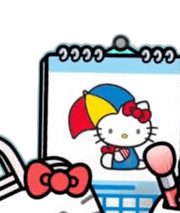
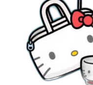
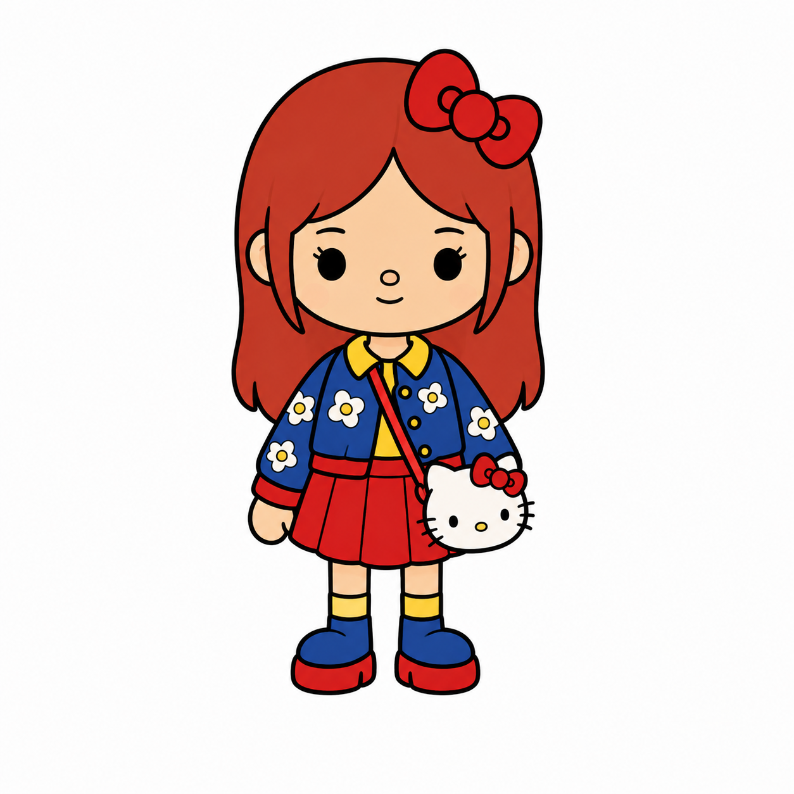
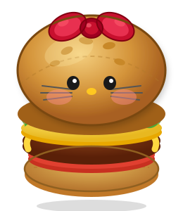
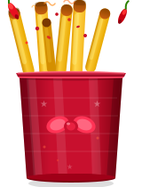
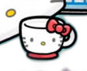
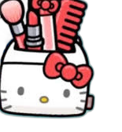

Hello Kitty
New Student · The Heart of the Group
Hello Kitty just transferred to Sanrio High alongside her best friends Dear Daniel and My Sweet Piano, and adjusting hasn't been easy. Making new friends is a struggle — she's got a temper that flares and a roar that surprises people. But underneath all of that is one of the kindest hearts you'll ever find. She's the glue that holds her whole crew together, even when she doesn't realize it.
- Best friends: Dear Daniel, My Sweet Piano
- Favorite subject: Math Batsu
- Favorite colors: Red, blue & white
- Crush: Pochacco (soccer team captain)
- Favorite food: Double cheeseburger with salted spicy fries
- Favorite drink: Frappuccino
★ NEW STUDENT ★
MATH BATSU
#POCHACCO
SPICY FRIES


